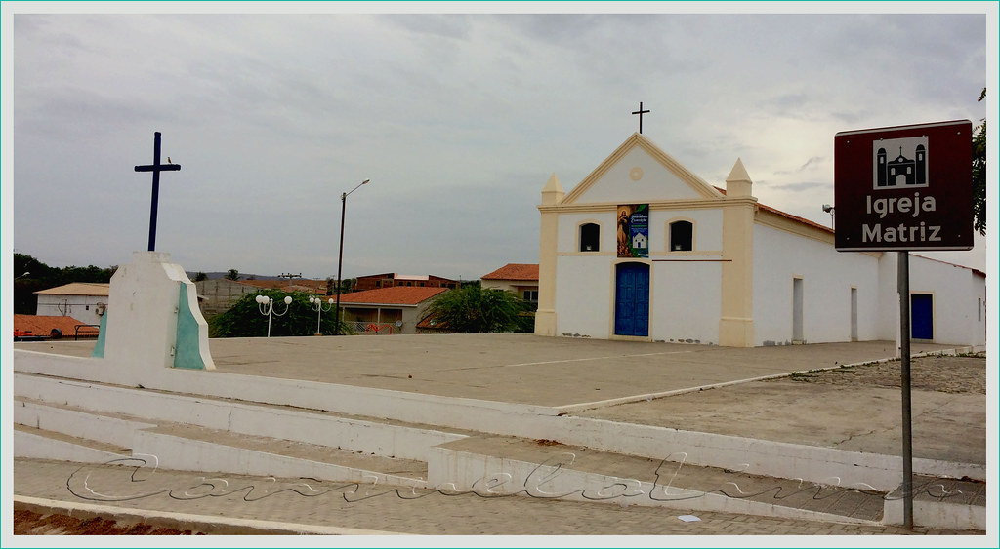

Geoinfos
Informações técnicas sobre relevo, população, IDH etc.
| INFORMAÇÕES | |
|---|---|
| Municípios limítrofes | Norte: Novo Oriente, Leste: Independência e Tauá, Sul: Parambu, Oeste: Assunção do Piauí e Pimenteiras (ambas no Piauí) |
| Fundação | 4 de junho de 1987 (34 anos) |
| Área total | 1 040,955 km² |
| Clima | semiárido |
| IDH | 0,625 — médio |
| PIB | R$ 61 703,083 mil |
| INFORMAÇÕES TERRITORIAIS | |
|---|---|
| Número de habitantes | 21 084 habitantes |
| Superfície de Quiterianópolis |
104 098 hectares
1040,98 km² |
| Densidade populacional | 20,3 ha./km² |
| Altitude de Quiterianópolis | 405 metros de altitude |
| Coordenadas geográficas decimais |
Latitude:
-5.84497
Longitude: -40.6963 |
| Coordenadas geográficas sexagesimais | Latitude: 5° 50' 42'' Sul , Longitude: 40° 41' 47'' Oeste |
| INFORMAÇÕES DO MUNICÍPIO | |
|---|---|
| Endereço da Prefeitura Municipal de Quiterianópolis |
Quiterianópolis
Prefeitura de Quiterianópolis
Rua Laurindo Gomes, s/n QUITERIANÓPOLIS - CE, 63652-000 Brasil |
| Telefone da prefeitura |
(88) 3657-1166
Internacional: +55 88 3657-1166 |
| Fax |
(88) 3657-1133
Internacional: +55 88 3657-1133 |
| Endereço electrónicoda prefeitura |
fjosue@uol.com.br
|
| pmqsaude@usedata.com.br | quiterianopolis.ce.gov.br |
| INFORMAÇÕES ADMINISTRATIVAS | ||
|---|---|---|
| Prefeito de Quiterianópolis | FRANCISCA PRISCILLA DUARTE DE FIGUEIREDO | |
| Partido politico | PSD | |
| INFORMAÇÕES DE TRANSPORTE | |
|---|---|
| Transporte urbano disponível | Não disponível |
| Aeroporto |
Aeroporto de Picos 163.6 km
Aeroporto Regional do Cariri
219.7 km
Aeroporto de Sobral
244.1 km
|
| INFORMAÇÕES DE DISTÂNCIA A OUTRAS CIDADES | ||
|---|---|---|
| São Paulo : 2071 km | Rio de Janeiro : 1918 km | Brasília : 1359 km |
| Salvador : 829 km | Belo Horizonte : 1595 km | Manaus : 2166 km |
| Curitiba : 2364 km | Fortaleza : 336 km mais perto | Goiânia : 1525 km |
| Belém : 995 km | Porto Alegre : 2910 km | Guarulhos : 2050 km |
| Campinas : 2018 km | São Luís : 545 km | Recife : 688 km |
| Distância calculada em linha reta! | ||
Fonte: Wikipedia e Cidade Brasil
História
Conheça mais sobre a história da Quiterianópolis.
Em 1933, a atual Quiterianópolis foi elevada à categoria de distrito de Independência, com o nome de "Santa Quitéria". Em 1938 Santa Quitéria mudou o nome para "Coutinho". Em 1963, Coutinho emancipou-se, voltando a condição de distrito em 1965. Em 1987 Coutinho foi novamente emancipado, já sob o nome Quiterianópolis. Foi elevado à categoria de município, pela lei estadual nº 11330, de 04 de junho de 1987, alterado pela lei estadual nº 11485, de 20 de julho de 1988, desmembrado de Independência.
Pontos Turísticos
Saiba mais sobre os melhores lugares e o que fazer em Quiterianópolis.
Igreja matriz da cidade de Quiterianópolis. Inicialmente foi construída uma capela em 1853, por Quitéria de Lima, e por isso o povoado teve o nome de Santa Quitéria. De povoado foi elevado a Distrito com o topônimo Santa Quitéria, em 1933, subordinado ao município de Independência. Em 1938, passa a denominação de Coutinho. Em 1987, quando é elevado a categoria de município, passa a ser denominado de Quiterianópolis. Ceará, Brasil.
Como Chegar?
Veja como chegar nos melhores pontos de Quiterianópolis